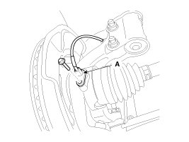
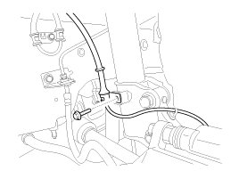
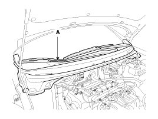
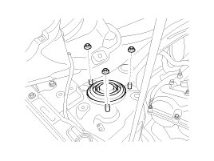
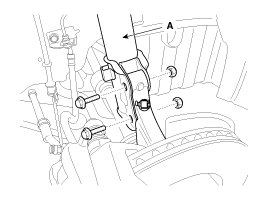
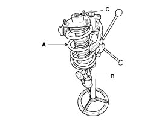
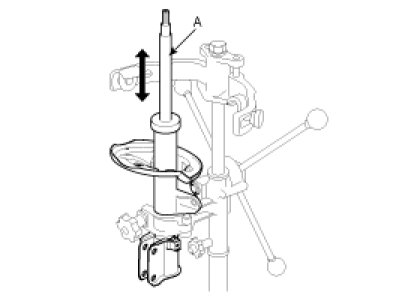

Repair Procedures
Replacement
1. Remove the front wheel & tire.
Tightening torque :
88.3 - 107.9N.m(9.0 - 11.0kgf.m, 65.1 - 79.6lb-ft)

CAUTION:
Be careful not to damage to the hub bolts when removing the front wheel & tire.
2. Remove the wheel speed sensor bracket (A) from the front strut assembly by loosening the mounting bolts.


3. Disconnect the stabilizer link (A) with the front strut assembly after loosening the nut.
Tightening torque :
98.1 - 117.7N.m(10.0 - 12.0kgf.m, 72.3 - 86.8lb-ft)

4. Remove the cowl top cover (A).

5. Loosen the strut mounting nut.
Tightening torque :
44.1 - 58.8N.m(4.5 - 6.0kgf.m, 32.5 - 43.4lb-ft)

6. Disconnect the front strut assembly (A) with the front axle by loosening the bolt & nut.
Tightening torque :
137.3 - 156.9N.m(14.0 - 16.0kgf.m, 101.3 - 115.7lb-ft)

7. Installation is the reverse of removal.
Disassembly
1. Using the special tool (09546-26000), compress the coil spring (A).
Tightening torque:
58.8 - 68.6N.m(6.0 - 7.0kgf.m, 43.4 - 50.6lb-ft)

2. Remove the self-locking nut (C) from the strut assembly (B).
3. Remove the insulator, spring seat, coil spring and dust cover from the strut assembly.
4. Reassembly is the reverse of the disassembly.
Inspection
1. Check the strut bearing for wear and damage.
2. Check the spring upper and lower seat for damage and deterioration.
3. Compress and extend the piston rod (A) and check that there is no abnormal resistance or unusual sound during operation.
